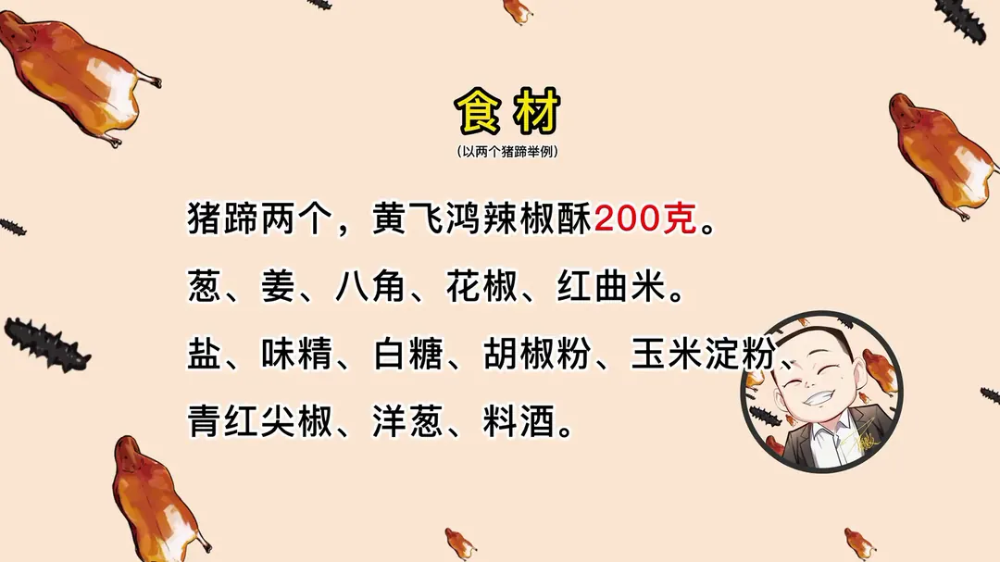
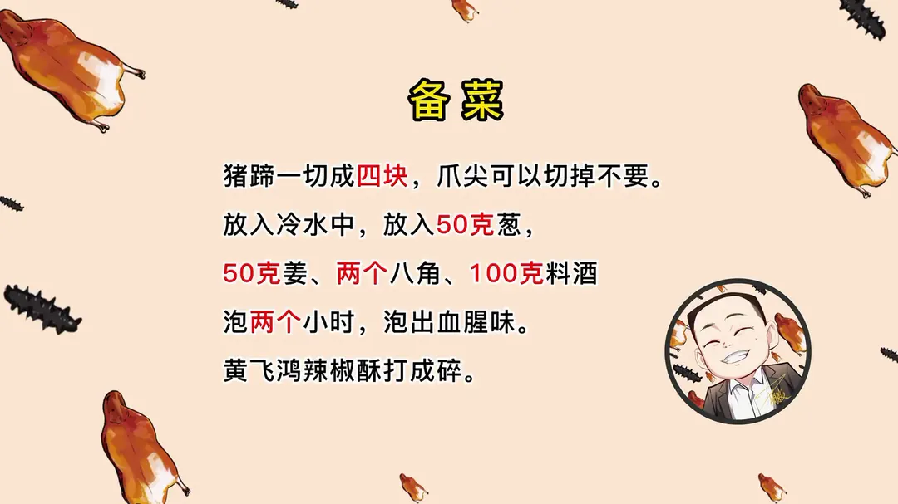
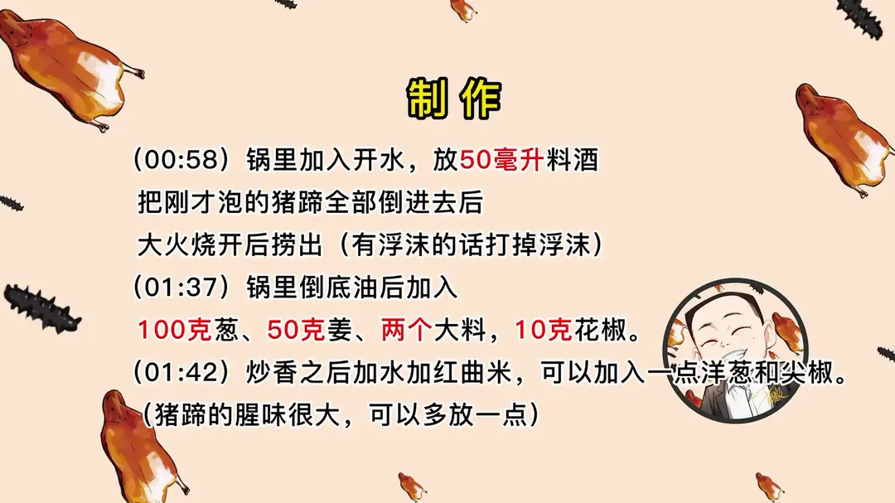
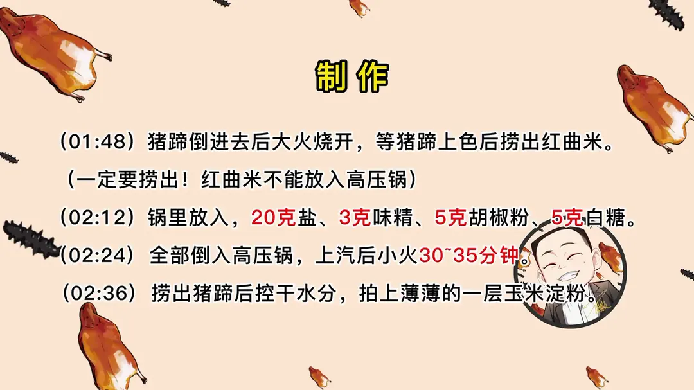
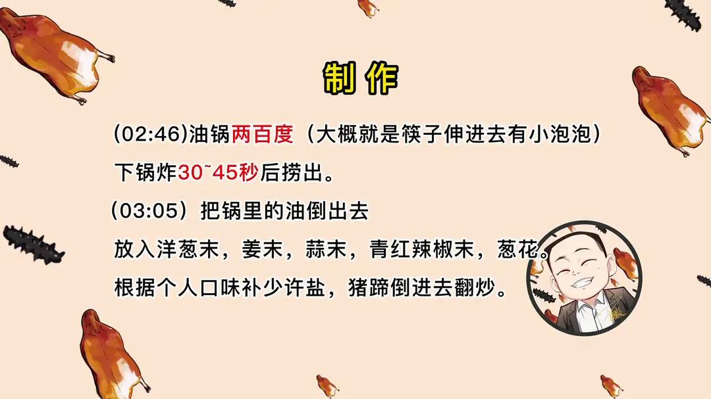
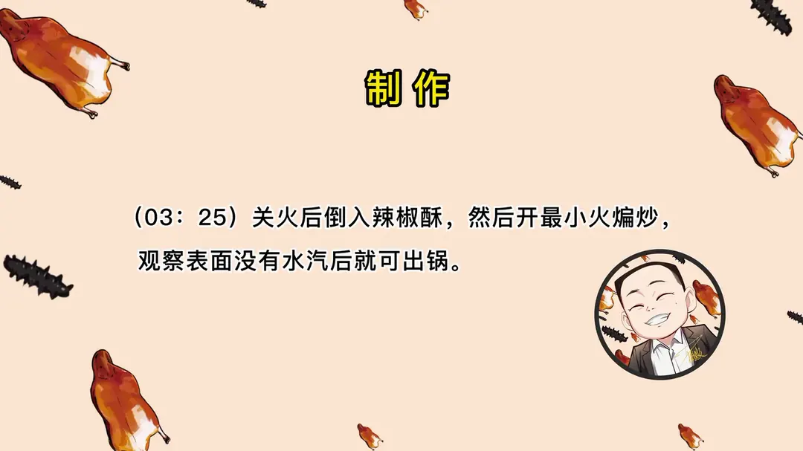

糯香猪手
隋卞一做。两只猪蹄先泡水去腥，红曲米上色后高压锅压 30~35 分钟，拍薄粉炸脆，再裹上辣椒酥。
原视频：https://www.bilibili.com/video/BV128411J7ZW
食材
猪蹄、黄飞鸿辣椒酥、葱 等 25 样
| 类别 | 用料 | 用量 |
|---|---|---|
| 主料 | 猪蹄 | 2 个 |
| 主料 | 黄飞鸿辣椒酥 | 200g |
| 泡水去腥 | 葱 | 50g |
| 泡水去腥 | 姜 | 50g |
| 泡水去腥 | 八角 | 2 个 |
| 泡水去腥 | 料酒 | 100g |
| 焯水 | 料酒 | 50g |
| 卤制 | 葱 | 100g |
| 卤制 | 姜 | 50g |
| 卤制 | 大料 | 2 个 |
| 卤制 | 花椒 | 10g |
| 卤制 | 红曲米 | 适量 |
| 卤制 | 洋葱 | 适量 |
| 卤制 | 尖椒 | 适量 |
| 调味 | 盐 | 20g |
| 调味 | 味精 | 3g |
| 调味 | 白糖 | 5g |
| 调味 | 胡椒粉 | 5g |
| 炸制 | 玉米淀粉 | 适量（拍薄薄一层） |
| 炒制 | 青红尖椒末 | 适量 |
| 炒制 | 洋葱末 | 适量 |
| 炒制 | 姜末 | 适量 |
| 炒制 | 蒜末 | 适量 |
| 炒制 | 葱花 | 适量 |
| 炒制 | 盐 | 少许 |
步骤
- 剁块：猪蹄一切成四块，爪尖可以切掉不要。
- 泡水：放入冷水中，加 50g 葱、50g 姜、两个八角、100g 料酒，泡两个小时泡出血腥味；黄飞鸿辣椒酥打成碎备用。
- 焯水：锅里加入开水，放 50 毫升料酒，把泡好的猪蹄全部倒进去，大火烧开后捞出，有浮沫的话打掉浮沫。
- 炒香：锅里倒底油后加入 100g 葱、50g 姜、两个大料、10g 花椒，炒香之后加水加红曲米，可以加入一点洋葱和尖椒（猪蹄的腥味很大，可以多放一点）。
- 上色：猪蹄倒进去后大火烧开，等猪蹄上色后捞出红曲米（一定要捞出，红曲米不能放入高压锅）。
- 调味：锅里放入 20g 盐、3g 味精、5g 胡椒粉、5g 白糖。
- 压锅：全部倒入高压锅，上汽后小火 30~35 分钟。
- 拍粉炸制：捞出猪蹄后控干水分，拍上薄薄的一层玉米淀粉；油锅两百度（大概就是筷子伸进去有小泡泡）下锅炸 30~45 秒后捞出。
- 炒制：把锅里的油倒出去，放入洋葱末、姜末、蒜末、青红辣椒末、葱花，根据个人口味补少许盐，猪蹄倒进去翻炒；关火后倒入辣椒酥，然后开最小火煸炒，观察表面没有水汽后即可出锅。
讲解要点
难度：★★★☆☆（步骤多但都不难，难点是炸制油温和最后炒辣椒酥的火候）
为什么这么做
- 泡水加葱姜、料酒、大料泡两小时：猪蹄味重，靠焯水只能去一层；先用冷水长泡把血腥味泡出来，凡是做猪蹄的菜都照这个处理。
- 开水下锅焯水：泡好的猪蹄用开水过一遍，血沫一撇就干净，腥味大的猪蹄可以多放点洋葱和尖椒一起煮。
- 红曲米只煮不压，上色后一定捞出来：红曲米给的是上色的红，下锅后会膨胀成一袋，留在锅里进高压锅会过艳、发苦，所以先捞出。
- 加糖是为了压红曲米的回苦：红曲米本身带一点苦味，5g 糖不是为甜，是把这点苦涩压住。
- 小火压 30~35 分钟：上汽后小火压够时间，皮炖到软糯、骨头一咬就脱，颤而不碎，才配得上下一步的炸。
- 拍薄粉、200℃ 炸半分钟：拍粉是为炸脆，但只能拍薄薄一层、看到白色不见肉；这一步主要把表面水分炸干，时间一长肉就缩、皮就爆。
- 关火后倒入辣椒酥、最小火煸：辣椒酥本身有油、很香，火一大就糊苦；最小火把水汽慢慢煸掉，香味才吸得满满的。
容易翻车
- 红曲米忘了捞，颜色红得发吓人，还会回苦。
- 淀粉拍厚了，一炸就成硬壳，吃着发糊。
- 炸前水分没控干，下油锅会爆油。
- 辣椒酥下锅时火还在中小火，几秒就糊。
- 压的时间不够，皮不够糯，炸完硬绷绷。
原片尾卡






原片文案
AI 字幕校准稿
好消息好消息，清水亭的猪蹄儿我给你们复刻出来了。注意看，这个人叫小隋，今天这个人来到了清水亭，他点了一个猪手。猪蹄的皮下炖得非常软糯，一个个一咬就脱骨；经过炸制，表面还有点脆，加上外边的辅料，又增加了一层复合的香味，所以这口感还是不错的。
片子后面有超级详细的清单过程，原料配料的不用记。首先得选用猪蹄儿。今儿个特别省事，小李特别疼我，给剁好块了。猪蹄众所周知肯定都有那个异味，咱们加上点葱姜、辣椒、大料、料酒，然后兑点水，拿手攥一攥，泡上它两个小时。只要你们做猪蹄的菜全都这么处理，绝对没有异味。
我们需要把这个辣椒酥打碎了，不用打得特别碎，有颗粒感就行了。这里面含了不少的油脂，很香。
我们开始煮猪蹄。开火，锅里边加点水，花雕酒腌过的猪蹄冷水下锅，开大火烧开之后撇血沫。这个空闲之际，咱们装点红曲米，最多装半袋，煮的时候要膨胀。血沫子撇干净了，一点沫子都没有，然后把它给捞出来。
开火，擦干锅内的水分，加入底油，加入葱姜、花椒、大料，稍微扒拉一下，煸香了之后加入水，然后把红曲米加进去，猪蹄倒里边。里边还可以搁个尖椒，还有刚才我们剩下的半拉洋葱，这都是去味的。大火烧开，看这个色，特别红的一个颜色，现在看着有点吓人，一会儿做完之后，这事儿就没有那么艳了。把这个红曲米就要拿出来了——刚才是很少的一部分，煮完之后满满的一袋了。
然后加点底味：盐、来上几粒味精、胡椒粉、来点糖。红曲米多少有点回苦的味道，拿糖调味一下。全部都倒高压锅里，然后盖上盖，上汽关小火压三十分钟。
我们把它捞出来，多余的汤要控一控，然后要拍淀粉，表面白不见肉，拍成这样就可以了。然后锅里边加油，油温大概 200 度，把猪蹄放进去炸上半分钟左右。这一步的作用主要是把猪蹄表面那个水分炸干。你们看现在的这个色就没有刚才那么鲜艳了，大概就长这样。
然后把锅里面的油倒出去，把洋葱、姜、蒜、青红辣椒倒进去，来点葱花，炒出香味，把猪蹄倒进去，搁点盐，翻炒，让它们化开盐、吸收点香味。然后关火，把这辣椒碎倒里边，开最小火，让那个辣椒碎在这猪蹄上面煸出一部分水汽，让那香味吸得满满的，就可以出锅了。
来吧兄弟，尝尝是不是那个味。这个猪蹄说实话挺肥的，但是吃着完全不腻，它卤的时间也够了，里面连骨头都是软的。不知道大家有没有吃过那种烤猪蹄，它比烤猪蹄还要再软烂，然后外面那个辣椒酥的料特别特别的香，里面一点腥气都没有，只剩下辣椒和猪蹄的那个糯搭配在一起，香上加香，吃的完全也不腻。我这个比清水亭那个多了一个炒制加味的过程，所以它比清水亭的味道更厚重一些。
这个在酒店卖多少钱？这个市场不一样，酒店里好像在 120 左右，学下来立省 100 块。二十块钱买猪蹄，八块钱买辣椒酥，一百块钱给你们当学费了。